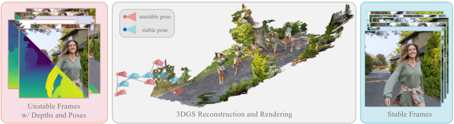
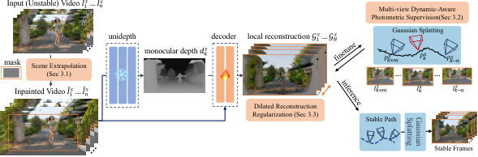
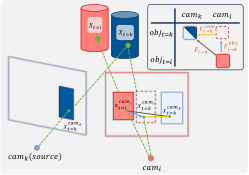
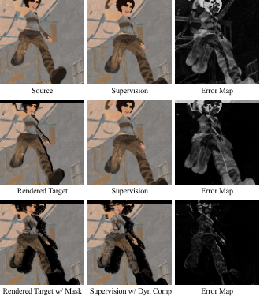
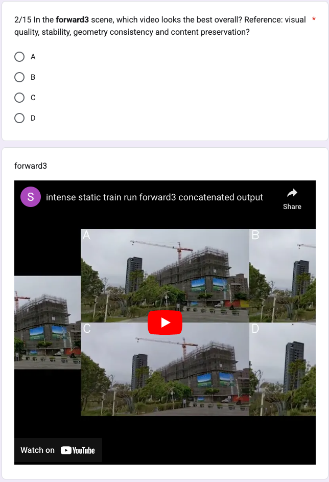
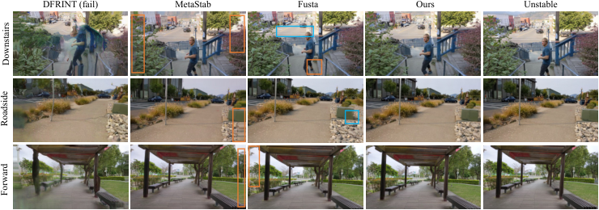
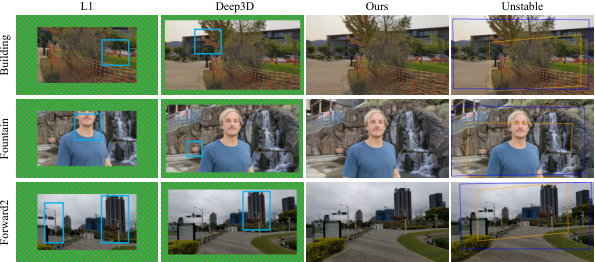
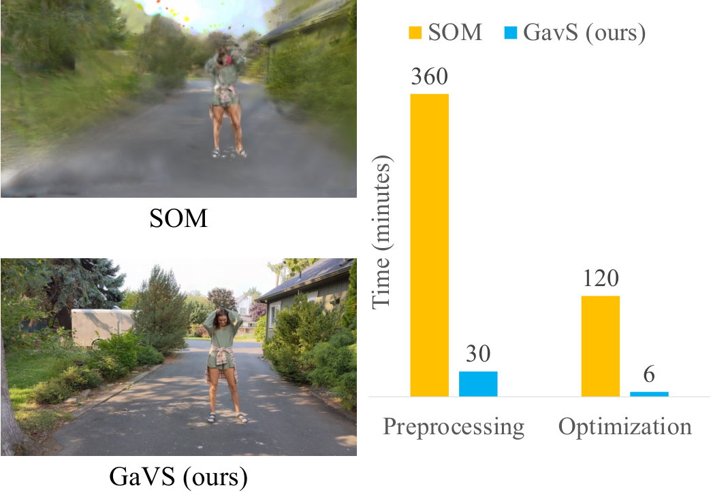
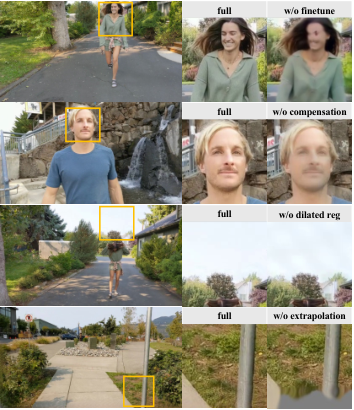

把视频稳像从「2D warp + 裁剪」重构为「逐帧前馈局部 3DGS 重建 + 平滑位姿渲染」:以 Flash3D/UniDepth 为骨干,测试时 3 epoch 微调 + 动态补偿光度监督 + 空洞跨帧正则,免裁剪全画幅输出;对比全局 4D 重建(Shape of Motion)预处理提速约 12×(附录口径 46×),优化提速约 20×(附录口径 10×)。
视频稳像(video stabilization)的标准三步是「跟踪相机运动 → 平滑轨迹 → 合成稳定帧」。以往方法在 2D / 2.5D 域完成第三步(单应、mesh flow、光流 warp 或多帧融合),缺少显式 3D 建模,导致几何畸变、过度裁剪、开放域泛化差三类顽疾。GaVS 把稳像重构为一个 3D grounded 的「局部重建 + 渲染」问题:给定 GLOMAP 估计的 3D 相机位姿,用一个前馈重建模型(Flash3D 骨架 + UniDepth 度量深度)把每一帧不稳图像独立地重建成一组逐像素 3DGS 基元,然后在高斯滤波后的平滑位姿上渲染出稳定帧。
一句话核心贡献:不做全局 4D 优化、不显式建变形场,用「逐帧前馈局部重建 + 轻量测试时微调」把动态场景稳像的预处理/优化成本从 Shape of Motion 级的「>10h + 1h」压到「13min 关键路径 + 几分钟微调」,同时保持时序一致与全画幅输出。
结果:对全画幅基线(FuSta / MetaStab / DIFRINT),GaVS 在 Stability 与 GC-S/GC-D 上最优或并列最优,Distortion 相当;对裁剪基线(L1 / Yu / Deep3D)全面领先;28 人用户研究中超过 60% 的偏好率。

观察一:稳像不需要全局重建。不稳定帧与目标稳定帧只差一个小位姿扰动,因此「逐帧局部重建 + 小基线渲染」即可覆盖;全局 4D 优化(尤其动态场景)既贵又脆。前馈逐帧重建把静态与动态部分天然统一 —— 动态物体不需要专门的形变模型,每帧重建出它当时的位置即可。
观察二:伪影最小化本质上要求相邻局部重建一致。单帧前馈重建的尺度/几何会逐帧抖动;但重建被神经网络参数化 —— 一次梯度更新会同时改进所有相似 patch 的重建,因此用「把每个局部重建渲染到邻近帧上做光度监督 + 跨帧基元正则」的测试时微调,只需几分钟就能把时序一致性「注入」网络权重。
| 符号 | 含义 | 形状 / 取值 |
|---|---|---|
| $I_k^{s}, I_k^{t}$ | 源(不稳定)/ 目标(稳定)第 $k$ 帧 | $[H, W, 3]$,训练 320×576、评估 480×864(源码) |
| $P_k^{s}, P_k^{t}$ | 不稳定 / 稳定相机位姿(世界系) | $SE(3)$,$[4,4]$ |
| $K$ | 相机内参(单针孔模型) | $[3,3]$ |
| $\mathbf{R}(\cdot)$ | 前馈局部重建模型(Flash3D 骨架) | UniDepth 编码器 + MLP 解码器 |
| $\mathcal{G}_k^{s}$ | 第 $k$ 帧的逐像素 GS 基元集合 $\{(\alpha_j,\mu_j,\Sigma_j,c_j)\}_{j=1}^{G}$ | 每像素 2 层高斯,$G=2HW$ |
| $F_{i\to k}, F_{i\to k}^{\mathrm{cam}}, F_{i\to k}^{\mathrm{obj}}$ | 全光流 / 相机运动流 / 物体运动流 | $[H, W, 2]$,RAFT 估计 |
| $W$ / $S$ / $s$ / $d$ | 多视角窗口半径 / 采样视图数 / 正则窗口大小 / 空洞步长 | $W{=}10$, $s{=}5$, $d{=}[0,2,4]$(3 epoch 递增) |
| $\sigma_s, w$ | 平滑高斯核 std / 平滑窗口 | $\sigma_s\in\{4,8\}$,$w=31$(源码 stability_window) |

核心设计逻辑:重建是局部的(逐帧)、一致性是借网络参数共享实现的。这与全局 4D 方法(把整段视频优化成一个规范表示)形成根本分野 —— 也正是本笔记 §14 与 Shape of Motion / Deformable-3DGS 对比的主线。
| 组件 | 输入 | 结构 / 算子 | 输出 |
|---|---|---|---|
| 深度编码器 | 源帧 $I_k^s$ $[B,3,H,W]$ | UniDepth(Piccinelli et al. 2024,度量深度,ViT 骨干,微调时冻结) | 深度图 $\mathcal{D}_k^s$ + 特征 |
| 反投影 | $\mathcal{D}_k^s$, $K$ | 逐像素反投影到 3D 点云 | 点云 $[B,3,H\cdot W]$ |
| GS 解码器(唯一被微调) | 深度+图像特征 | MLP 解码器,按 [3,1,3,4,3,9] 切分输出(models/decoder/gaussian_decoder.py:51) | 每像素 2 层 GS 基元:offset(3)、opacity(1)、scaling(3)、rotation 四元数(4)、SH dc(3)、SH rest(9) |
| 渲染器 | $\mathcal{G}_k^s$, 目标位姿 | 带位姿的可微光栅化(thirdparty diff-gaussian-rasterization-w-pose) | 渲染图 $\hat{I}$ |
gaussians_per_pixel: 2):论文 §4.1 说明用两组基元分别建模遮挡前后表面,源码 configs/model/gaussian.yaml 确认。predict_offset: true),并非自由位置;预训练权重来自 RealEstate10K 上的 Flash3D(re10k_v2_checkpoints)。gaussian_decoder.py:45-47);max SH degree = 1。即:目标稳定帧 = 源帧的局部重建在「稳定位姿相对源位姿」的小变换下渲染。因为 $P_k^t\otimes\mathrm{inv}(P_k^s)$ 是小基线变换,局部重建足以覆盖视锥 —— 这是全方法的立足点。
本模块无独立监督;预训练权重继承 Flash3D(RealEstate10K 上训练),微调阶段由模块三的多视角光度损失(式 2)+ 模块四的正则(式 5~6)+ 辅助正则(式 10~13)共同驱动。
传统稳像裁剪的根源:稳定位姿相对源位姿有偏移,源帧内容覆盖不了目标视锥四角。GaVS 的对策是先把内容造出来再重建:用视频补全模型 ProPainter(Zhou et al. 2023)把每帧四边各外扩 96 px(附录 C.4;评估配置 pad_border_aug: 96,训练配置 64),边界掩码指示待填充区域,光流把邻帧内容传播进来;外推后的「加宽帧」再进重建模型。于是平滑位姿下的渲染总能落在重建范围内,裁剪比 CR=1.0。
| 参数 | 取值 | 出处 |
|---|---|---|
| 外扩宽度 | 四边各 96 px(论文)/ train 配置 64、eval 配置 96 | 附录 C.4;configs/dataset/gavs.yaml vs layered_gavs_eval.yaml |
| 子视频切分 | 长度 100 帧、重叠 20 帧 | 附录 C.4 |
| 特征域传播 | 邻域 stride 15、参考帧 10 | 附录 C.4 |
| 耗时 | 8 min(dance 455 帧) | 附录表 4 |
为什么「先补全再重建」优于「重建后再补」?补全发生在 2D 图像域,ProPainter 的跨帧传播天然保证外推区域与相邻帧时序一致;若改为在 3D 侧外推高斯,则要为每个视频发明一套基元生成机制。代价是外推区域的真实性依赖补全模型 —— 定性结果(图 10 原文)中 GaVS 边界偶有轻微模糊,论文也把 MetaStab 的「blurry outpainting」列为主要对比优势点。
该模块无直接监督(预处理步骤,推理路径外);其效果通过消融验证(§13:去掉外推 → 边界重建退化、视野损失)。
| 步骤 | 输入 | 操作 | 输出 |
|---|---|---|---|
| 邻帧采样 | 源帧索引 $k$ | 窗口 $[k-W, k+W]$($W=10$)内随机取 $S-1$ 帧 + 自身(gavs_dataset.py:248 window_size = 10) | 视图集 $\mathcal{N}_k$ 及位姿 $P_{\mathcal{N}_k}$ |
| 跨视角渲染 | $\mathcal{G}_k^s$, $P_i^s$ | $\hat{I}_i^s = \mathrm{GSplat}(\mathcal{G}_k^s, P_i^s)$ | 邻帧位姿下的渲染图 |
| 动态补偿 | $I_i^s$, 光流, 深度, 位姿 | 式 3~4:物体运动流 warp 邻帧到「$t=k$ 标准时刻」 | 伪 GT $\tilde{I}_i^s$ |
| 光度损失 | $\hat{I}_i^s$, $\tilde{I}_i^s$ | L1 + SSIM(式 2),仅有效区域 | $\mathcal{L}_{RGB}$ |
其中 $\lambda_{ssim}=0.85$、L1 权重 1.0(论文未给数值,源码 configs/loss/reconstruction.yaml)。
动态物体违反极线几何,直接光度监督会把动的东西「抹糊」。补偿机制把 2D 像素运动解耦为相机运动 + 物体运动:
其中全光流 $F_{i\to k}=\mathrm{RAFT}(I_i^s, I_k^s)$;相机运动流由「源帧深度反投影 → 相对位姿变换 → 重投影」得到(源码 trainer.py:59-88 compute_depth_warping_flow 正是这一计算)。式 4 得到的是「反向」流 $F^{\mathrm{cam}}_{k\to i}$,所需的 $F^{\mathrm{cam}}_{i\to k}$ 由前向溅射(forward splatting)生成;遮挡与未溅射区域通过双向一致性检查 + 溅射权重屏蔽,只在有效区域监督。


机制解释(为什么减法可行):刚性场景下全光流完全由相机运动+深度决定;动态物体的像素运动是两者叠加。深度来自度量估计(UniDepth),尺度对齐用 GLOMAP 稀疏点做 RANSAC 全局标定(附录 C.2,取逐帧尺度中位数 $\alpha^*=\mathrm{median}(\{\alpha_k\})$),保证相机运动流的尺度正确,减法才有意义。论文承认补偿会引入少量 warp 伪影(尺度变化/估计误差),靠多帧监督与预训练先验鲁棒吸收。
光度监督只隐式促一致(每个重建各自变准)。显式做法是直接要求相邻帧的 GS 基元在对应像素上相等:用双向光流建立稠密对应,对匹配上的基元属性做 L2 正则,并把窗口以「空洞(dilated)」方式逐 epoch 扩大 —— 一致性从局部向长程扩散,类似膨胀卷积扩大感受野。
$\mathcal{M}^{i,j}$ 为双向一致性有效掩码;$s=5$,3 个 epoch 分别取 $d=[0,2,4]$,即配对帧间距 $1\to 3\to 5$,覆盖范围 $5\to 15\to 25$ 帧(原文 Fig. 5 以 $s{=}3$ 示意 3→9→27 的累计扩散;该图为矢量示意图无位图,此处用 Mermaid 重述)。
datasets/util.py:100 WindowSampler(stride_start=1, stride_delta=2, batch_size=5),每个 epoch 末 improve_window_size()(train.py:157)→ stride 1→3→5,对应论文 $d{+}1$。batch 内 5 帧即论文窗口 $s=5$。trainer.py:125-144 把 batch 内所有帧的基元 warp 到中间帧(中间帧基元 detach),分别对 opacity / scaling / rotation / SH-dc 四个属性做 MSE(子项权重各 1.0,外层 window.weight=0.01)。式 5 的 $\mathcal{L}_{pair}(i,j)$ 在代码里实为 $\mathcal{L}_{pair}(i, \mathrm{mid})$。scale=2, raft_iters=10,trainer.py:108-113),而非读预处理光流 —— 预处理 RAFT 用 20 迭代(附录 C.5),训练在线用 10 迭代。本模块即监督本身(自监督正则);消融(§13)显示去掉它 → 无纹理区域出现基元尺度/朝向失控的伪影。
两个辅助正则(附录 A):$\mathcal{L}_{scale}$ 惩罚过大的高斯基元(阈值自适应 $\tau_{large}=70w/\mathcal{D}$,式 10~11);$\mathcal{L}_{offset}$ 约束渲染深度贴近先验深度、防止基元漂移(阈值 $\tau_{depth}=0.2\mathcal{D}$,式 12~13)。论文注明 $\mathcal{L}_{scale}$ 多数情况可选、$\mathcal{L}_{offset}$ 只用于前景物体效果更好(源码 only_fg_regularization: True 印证)—— 前景处极线监督更弱,需要额外锚定。
对平移与旋转分量分别做高斯加权平均($g^*$ 为归一化权重),沿用 Deep3D(Lee et al. 2021)的做法。源码 datasets/smooth.py:75 smooth_trajectory():窗口 $w=31$(stability_window: 31),旋转在 Euler 角空间加权平均(scipy.signal.windows.gaussian(window, stability),std 即 $\sigma_s\in\{4,8\}$)。$\sigma_s$ 是暴露给用户的「稳定强度」旋钮:越大越稳、越偏离原始运动意图。
注意(开环设计):平滑与重建解耦 —— 平滑轨迹不与 FOV/内容覆盖联合优化。论文 §5 承认:极强运动下重建可能覆盖不了整帧。这是「平滑后渲染」范式的结构性边界,与 2D 方法「带约束的轨迹优化」形成对照。
| 损失项 | 公式 | 权重(源码真值) | 作用 |
|---|---|---|---|
| $\mathcal{L}_{RGB}$(L1) | 式 2,$\|\hat{I}-I\|_1$ | 1.0(configs/loss/reconstruction.yaml) | 多视角光度主监督,保锐利 |
| $\mathcal{L}_{RGB}$(SSIM) | 式 2,$\mathrm{SSIM}$ | 0.85(同上;论文未给数值) | 结构相似性 |
| $\mathcal{L}_{consistent}$ | 式 5~6,四属性 MSE | 0.01(regularization.yaml window;opacity/scaling/rotation/SH-dc 子项各 ×1.0) | 跨帧基元一致性(空洞窗口) |
| $\mathcal{L}_{scale}$ | 式 10~11,超阈值大基元惩罚 | 0.05(gauss_scale.weight) | 抑制巨型 floaters;论文称多数场景可选 |
| $\mathcal{L}_{offset}$ | 式 12~13,渲染深度贴合先验 | 0.01(gauss_offset.weight;阈值比 ratio: 0.2 对应 $\tau_{depth}=0.2\mathcal{D}$) | 防基元漂移;仅前景生效(only_fg_regularization: True) |
| depth_reg | 深度正则(配置存在,权重 0.01) | 0.01(depth_reg.weight) | ⚠️【待核实】 论文正文未单列此项,疑似与 $\mathcal{L}_{offset}$ 同源或默认未生效,引用时注意 |
评注:微调与推理完全解耦 —— 同一微调结果可用不同 $\sigma_s$ 反复渲染不同稳定强度的版本(README 的 eval-only 命令正是这样用的),这是相对「一次性优化轨迹」的 2D 方法的工程优势。
本章节数值均直接读自 github.com/sinoyou/GaVS(2026-10-10 clone,默认分支)。论文未给而源码给出的数值(如 SSIM 权重)以源码为准。
| 项 | 取值 | 出处 |
|---|---|---|
| 优化器 / 学习率 | Adam,lr = 4e-4,CosineAnnealingLR(T_max = 总步数) | layered_gavs_overfit.yaml;train.py:142 |
| epoch / batch | 3 epoch;batch_size = 5(= 正则窗口 s) | layered_gavs_overfit.yaml(num_epochs: 3) |
| 可训练参数 | 仅 GS 解码器(UniDepth 编码器冻结) | 论文 Fig. 2 + train.load_weights_folder |
| 训练分辨率 | 320 × 576(pad 64) | configs/dataset/gavs.yaml |
| 评估分辨率 | 480 × 864(pad 96) | configs/experiment/layered_gavs_eval.yaml |
| 多视角窗口 | W = 10(window_size = 10) | datasets/gavs_dataset.py:248 |
| 空洞调度 | stride_start=1, delta=2 → 1/3/5(论文 d=0/2/4) | datasets/util.py:10,100;train.py:157 |
| 每像素高斯层数 | 2(遮挡建模) | configs/model/gaussian.yaml gaussians_per_pixel |
| 深度截断 | max_depth = 20(实验配置覆盖默认 100) | layered_gavs_overfit.yaml |
| 平滑 | 窗口 31,σ_s ∈ {4, 8},Euler 空间高斯加权 | gavs.yaml stability_window;datasets/smooth.py:75 |
| 环境 | Python 3.10 + CUDA 12.6,自编译 diff-gaussian-rasterization-w-pose | README.md:28,48 |
| 预处理任务 | 耗时 | 备注 |
|---|---|---|
| 滚动快门 + OIS 校正 | 1 min | 需陀螺仪日志(附录 C.1 算法 1) |
| ProPainter 视频补全 | 8 min | 可与位姿估计并行 |
| Grounded-SAM2 动态掩码 | < 1 min | prompt: vehicle / human 等常见动态类 |
| GLOMAP 位姿 + 稀疏重建 | 11 min | 关键路径之一 |
| UniDepth 稠密深度 | 8 min | 可并行 |
| RAFT 光流(20 邻帧双向,20 迭代) | 10 min | 可并行 |
| 关键路径合计 | ≈ 13 min | RS → 动态掩码 → 位姿估计 |
微调时长论文未给精确值,仅描述「few minutes」(§1 脚注:神经参数化使单次梯度更新同时改进所有相似 patch);⚠️【待核实】 由 §4.5「较 SoM 优化提速 20×(SoM 为 1h)」反推约 3 min,与附录 C.6「提速 10×」反推的 6 min 不一致 —— 两处口径冲突,详见 §12.4 的原文矛盾记录。渲染本身为 3DGS 光栅化,接近实时(论文未报 FPS)。
README.md:67,168),照抄链接会装错工具。| 方法 | 类型 | D ↑ | S ↑ | GC-S ↓ | GC-D ↑ |
|---|---|---|---|---|---|
| DIFRINT (CVPR'20) | 2D 插值 | 0.52(泛化失败,致命伪影) | 0.80 | 1.78 | 21.53 |
| FuSta (CVPR'21) | 2D warp+融合 | 0.97 | 0.91 | 0.90 | 27.21 |
| MetaStab (ECCV'24) | 2D 元学习 | 0.99 | 0.87 | 0.55 | 29.79 |
| GaVS (σ_s=4) | 3D | 0.98 | 0.90 | 0.53 | 31.27 |
| GaVS (σ_s=8) | 3D | 0.97 | 0.92 | 0.54 | 30.99 |
分场景组(Mild/Intense/Dynamics)的 S/GC-S/GC-D 全表见论文表 1;GC-S、GC-D 各组最优均为 GaVS(σ_s=4)。加粗为全表最优。
| 方法 | 类型 | CR ↑ | D ↑ | S ↑ | GC-S ↓ | GC-D ↑ |
|---|---|---|---|---|---|---|
| L1 (SIGGRAPH'11) | 2D | 0.65 | 0.83 | 0.91 | 1.18 | 27.09 |
| Yu & Ramamoorthi (CVPR'20) | 2D | 0.88 | 0.95 | 0.91 | 0.93 | 29.67 |
| Deep3D (ICCV'21) | 2.5D | 0.91 | 0.89 | 0.90 | 0.72 | 22.78 |
| GaVS (σ_s=4) | 3D | 1.0 | 0.98 | 0.90 | 0.54 | 31.27 |
| 方法(仅原测试集,公平对比) | CR ↑ | D ↑ | S ↑ | GC-S ↓ | GC-D ↑ |
|---|---|---|---|---|---|
| DeepFused(陀螺仪,传感器辅助) | 0.83 | 0.94 | 0.92 | 0.47 | 30.17 |
| GaVS (σ_s=4,无传感器) | 1.0 | 0.97 | 0.92 | 0.48 | 31.04 |
解读:GaVS 对「带额外硬件(陀螺仪)」的 DeepFused 稳定度持平(0.92),但免裁剪(CR 1.0 vs 0.83)、畸变更低。用户研究:28 名被试 × 15 视频,各场景组偏好率均 >60%(原文 Fig. 6 为矢量柱状图无位图;问卷示例见图 5)。




| 出处 | 论文表述 | 按原始数字复核 | 结论 |
|---|---|---|---|
| 正文 §4.5 | 预处理提速 12×、优化提速 20× | 若 SoM 预处理 >10h、GaVS 13min → 约 46×;优化 1h/20× → GaVS 约 3min | ⚠️【待核实】 附录的 46× 与原始数字自洽(>10h / 13min ≈ 46×);正文 12× 无任何口径能推出,疑似 v2 修订时改了数字但未同步附录;优化侧 20× 与 10× 差一倍(GaVS 微调取 3min 或 6min 均可各自自洽),引用时建议写「约 10~20×(正文/附录口径不一)」 |
| 附录 C.6 | 预处理提速 46×、优化提速 10× | >10h / 13min ≈ 46× ✓;优化 1h/10× → GaVS 约 6min |
论文消融为纯定性(§4.6 脚注:稳像指标定义在稀疏特征上,无法反映稠密图像退化),在 dance(Dynamics)、fountain(Dynamics)、roadside(Intense)三个场景上逐组件关闭:
| 配置 | 现象(论文描述) | 机制解释 |
|---|---|---|
| w/o 测试时微调 | 泛化失败、细节丢失、模糊伪影 | RealEstate10K 预训练与目标视频存在域差;TTO 是弥合域差的核心 |
| w/o 动态补偿 | 重建退化,人脸等动态区域纹理模糊 | 动态物体违反极线几何,未补偿的多视角监督把运动「平均掉」 |
| w/o 空洞正则 | 无纹理区域出现基元尺度/朝向失控伪影 | 缺显式跨帧约束,逐帧重建自由度太高 |
| w/o 场景外推 | 边界重建退化、视野缩小 | 稳定位姿下目标视锥超出源帧内容 |

评估缺口:消融没有量化表,也没有「微调 epoch 数」「窗口 W/s 大小」「σ_s 扫描」的敏感性分析。复现时这些旋钮的鲁棒性需要自行验证(README 给了四个消融开关命令,见 README.md:121-164)。
这是本笔记的核心章节。GaVS 与 Shape of Motion(SoM, SIGGRAPH 2024)、Deformable-3DGS(D-3DGS, SIGGRAPH Asia 2023;库内笔记 3D-20230922-Deformable-3DGS)的关系是「同一表示(3DGS)、相反的组织方式」:后两者把整段视频全局优化成一个 4D 表示;GaVS 则断言稳像任务根本不需要全局表示,逐帧前馈局部重建 + 轻量测试时微调就够。论文 §4.5 只与 SoM 做了直接对比(D-3DGS 全文未被引用);与 D-3DGS 的对比为本笔记基于两边原文的机制性推断,相应处已标注。
| 维度 | GaVS(本文) | Shape of Motion | Deformable-3DGS |
|---|---|---|---|
| 任务目标 | 视频稳像(小基线重渲染) | 单目动态场景 4D 重建 + 3D 跟踪 + NVS | 动态场景 NVS(合成/受控真实数据) |
| 场景组织 | 逐帧局部重建,$T$ 组独立 GS | 全局:静态 GS + 动态 GS,运动用 SE(3) 运动基低秩组合表示 | 全局:规范空间(canonical)GS + 变形场 MLP(8×256)映射到各时刻 |
| 动态建模 | 不显式建模 —— 每帧重建成物体当时的位置,动态由逐帧独立性隐式吸收 | 运动基线性组合,软解耦为若干近似刚体组 | 全局 MLP $(x,t)\to(\Delta x,\Delta q)$(旋转+平移) |
| 优化方式 | 预训练 + 测试时微调 3 epoch(仅解码器),几分钟 | 逐视频全局优化,300 帧约 2h / A100 | 逐场景优化(canonical + 变形场联合),退火平滑训练 |
| 外部依赖 | GLOMAP 位姿、UniDepth 深度、RAFT 光流、SAM2 掩码、ProPainter 补全、陀螺仪(RS 校正) | 单目深度 + 长程 2D tracks(TAPIR/CoTracker 类),预处理 >10h(GaVS 附录口径) | COLMAP 位姿(D-NeRF 数据直接给定位姿) |
| 新视角能力 | 仅小基线(稳像位姿扰动范围) | 大基线 NVS + 长程 3D/2D 跟踪 | 时间维自由插值,NVS 限于训练视角分布 |
| 渲染速度 | 3DGS 光栅化,近实时(论文未报 FPS) | 约 140 FPS(原文) | 实时(原文宣称) |
| 开源 | ✅ 代码+数据+权重(sinoyou/GaVS) | ✅(shape-of-motion) | ✅(ingra14m/Deformable-3D-Gaussians) |
预处理:GaVS 关键路径(RS 校正 → 动态掩码 → GLOMAP)13 min;SoM 需要长程 2D 跟踪等预处理 >10h。附录口径提速 46×,正文口径 12×(矛盾见 §12.4)。
优化:GaVS 测试时微调 3 epoch 几分钟;SoM 全局优化约 1h。附录口径提速 10×、正文口径 20×。
D-3DGS:动态 = 一个可学习的连续变形函数(全局 MLP),把所有时刻压进同一规范空间。代价:复杂铰接运动下单一 MLP 欠拟合(库内 D-3DGS 笔记 §局限亦有记录);好处:时间维连续,可插值。
SoM:动态 = 低秩运动基(场景运动是少量 SE(3) 基的逐点线性组合),靠长程 2D tracks 提供监督。代价:tracks 质量即上限,预处理昂贵;好处:直接产出长程 3D 轨迹这一额外资产。
GaVS:动态 = 不存在 —— 每帧独立重建,时间维被「逐帧快照 + 跨帧一致性正则」取代。代价:没有时间维连续模型,不能插值、不能大基线 NVS;好处:动态复杂度不再进入优化难题,舞蹈、车辆、流体一并对付(论文 §1:「unifies the reconstruction of static and dynamic scene parts」)。
结论:GaVS 的「改进」不是重建质量的全面超越,而是任务重定义带来的成本-鲁棒性革命 —— 当目标只是「在邻近位姿渲染一帧稳定画面」时,全局 4D 表示是过度构建(over-engineering),它的两大难点(变形场收敛、长程跟踪质量)恰恰在复杂动态场景最致命。GaVS 用「放弃全局一致性、放弃时间维模型」换来 1~2 个数量级的速度提升和对复杂动态的免疫。⚠️【推测】 反过来,在需要大基线 NVS、3D 跟踪输出或时间插值的任务上,GaVS 的逐帧局部重建不具备替代 SoM/D-3DGS 的能力 —— 三者是「同表示、不同任务切片」的关系。
| 方法 | 年份 | 输入假设 | 场景表示 | 监督信号 | 训练数据 | 训练时长 | 推理耗时 | 显存 | 关键指标 | 开源 |
|---|---|---|---|---|---|---|---|---|---|---|
| GaVS | 2025 | 单目视频+GLOMAP 位姿(+gyro 做 RS 校正) | 逐帧局部 3DGS(前馈) | 多视角光度(动态补偿)+ 跨帧基元正则 | 骨干预训练于 RealEstate10K | TTO 3 epoch,几分钟/视频 | 光栅化近实时 | 单卡 RTX 5000 Ada;高分辨率扩展性差(论文 §5) | GC-D 31.27 / GC-S 0.53 / CR 1.0(表 1~2) | ✅ |
| Shape of Motion | 2024 | 单目视频 + 单目深度 + 长程 2D tracks | 全局静态 GS + 动态 GS(SE(3) 运动基) | tracks 重投影 + 深度先验等 | 无预训练,逐视频优化 | 约 2h / 300 帧 / A100 | 约 140 FPS | —(原文未列) | 复杂动态下渲染崩坏(GaVS Fig. 8) | ✅ |
| Deformable-3DGS | 2023 | 已知位姿(COLMAP/GT)的动态多帧 | 规范空间 GS + 变形场 MLP | 逐时刻光度(退火平滑) | 无预训练,逐场景优化 | 逐场景数十分钟级(见库内笔记) | 实时渲染 | —(原文未列) | D-NeRF 合成集 PSNR 较隐式基线 +3~5 dB(库内笔记) | ✅ |
| FuSta | 2021 | 单目视频 | 2D warp + 多帧融合(无 3D) | —(预训练模型) | — | — | — | — | S 0.91 / GC-S 0.90(时序剪切伪影) | ✅ |
| MetaStab | 2024 | 单目视频 | 2D 插值(元学习) | —(预训练模型) | — | — | — | — | D 0.99 但剧烈动态下失稳(S 0.87) | ✅ |
| Deep3D | 2021 | 单目视频(+深度线索) | 2.5D(深度辅助 warp) | —(预训练模型) | — | — | — | — | CR 0.91 仍有裁剪,GC-D 22.78 垫底 | ✅ |
「—」= 原文未披露,不填估计值。SoM 训练时长为原文「300 帧 960×720 约 2h / A100」;GaVS 微调时长为论文定性描述「few minutes」(精确值两口径矛盾,见 §12.4)。
| 范式 | 代表方法 | 核心先验 | 局限 |
|---|---|---|---|
| 2D 轨迹/warp 稳像 | L1 → Yu → FuSta / DIFRINT / MetaStab | 相机运动可用 2D 变换/流参数化 | 无 3D → 视差畸变;逐帧变换 → 裁剪;泛化差 |
| 2.5D / 传感器辅助稳像 | Deep3D、DeepFused(gyro) | 深度线索或 IMU 可近似 3D | 静态场景假设;依赖额外硬件;仍有裁剪 |
| 全局 4D 重建(规范空间/运动基) | D-3DGS → SoM(及 LocalRF/Easi3R 等) | 动态 = 变形场或低秩运动基 | 优化昂贵;依赖 tracks/位姿质量;复杂动态下收敛难 |
| 前馈局部重建 + 测试时一致化(本文) | GaVS(骨干 Flash3D;谱系见 前馈 3D 重建模型综述) | 稳像是小基线问题;动态无需显式模型;一致性可由网络参数共享获得 | 依赖外部位姿/深度;开环平滑;只服务小基线渲染 |
库内交叉:与 Deformable-3DGS 笔记 的「规范空间 + 变形场」路线对照阅读;4D 动态高斯综述 给出全局动态重建路线全景;前馈 3D 重建综述 是 GaVS 骨干(Flash3D 一支)的技术背景。
问题:式 4 的相机运动流、式 1 的渲染位姿、GC-S 评测全部建立在 GLOMAP 位姿正确的前提上;论文 §5 自承认纯旋转/低画质场景失效。代码佐证:尺度对齐(RANSAC,附录 C.2)只估计一个全局标量 alpha(datasets/gavs_dataset.py:195 get_depth_scale),无法吸收逐帧位姿漂移。改进:把位姿作为可微变量纳入 TTO(渲染器已是带位姿可微的 diff-gaussian-rasterization-w-pose),或用 VGGT/Pi3 类前馈位姿替换 GLOMAP 以增强鲁棒性。
问题:论文式 5~6 描述窗口内两两配对正则;代码实为 batch 内 5 帧全部 warp 到中间帧做 MSE(trainer.py:125-144),中间帧基元 detach。这意味着一致性信号是「星型」而非「链式」,跨 batch 的长程一致性完全依赖同一解码器权重的间接传递。改进:中间帧不 detach 改为 EMA teacher,或显式加链式相邻对损失。
问题:动态补偿依赖「全光流 - 相机流」残差,但动态掩码(预处理)与词表绑定(vehicle/human,附录 C.3);未入词表的动态物体只能靠残差裸扛,而残差质量又依赖深度与位姿。改进:用词表-free 的运动分割(如按光流残差幅度自举动态区域)替代固定 prompt。
问题:15 个场景全部改造自 DeepFused(手机+陀螺仪拍摄分布),对运动相机/无人机/低光等域的覆盖未知;消融只有定性没有量化(§4.6 脚注自承认),也缺超参敏感性分析(W、s、epoch 数、σ_s)。改进:补跨域评测(如自采 3090 实拍)+ 量化消融。
问题:对 SoM 的提速,正文 12×/20× 与附录 46×/10× 不一致(§12.4 已列三列复核)。改进:引用时注明口径;给作者提 issue 修正。
问题:G = 2HW 逐像素基元,论文 §5 承认高分辨率下显存压力大;评估仅到 480×864。代码佐证:`configs/model/gaussian.yaml` `gaussians_per_pixel: 2` 写死,无剪枝/分层机制。改进:低显著度区域降采样基元数,或引入 anchor-based 表示(如 Scaffold-GS 思路)。
问题:GLOMAP / ProPainter / Grounded-SAM2 / UniDepth / RAFT 五个外部工具,任一版本漂移都会坏链;README 的 GLOMAP 链接还错指向 ProPainter(README.md:67)。改进:容器化锁定版本;预处理产出做成标准中间格式。
| 改进点 | 优先级 | 预期收益 |
|---|---|---|
| 位姿纳入 TTO 可微优化 | 高 | 去掉最大单点故障,扩展到低质素材 |
| 正则改为链式/EMA-teacher | 中 | 长程时序一致性 |
| 词表-free 动态分割 | 中 | 开放域鲁棒性 |
| 跨域量化评测 + 消融量化 | 中 | 结论可信度 |
| 基元剪枝/分层 | 中 | 高分辨率落地 |
| 链条容器化 | 低 | 复现效率 |
个人认为最关键的三点:① 位姿可微化(决定方法能不能走出「干净数据集」);② 动态分割去词表化(决定开放域上限);③ 正则的星型→链式修正(决定长视频一致性,且改动成本最低)。
GaVS 的价值不在稳像榜单本身,而在于示范了一个可迁移的判断:当任务只需要小基线重渲染时,「全局 4D 重建」是过度构建;逐帧前馈重建 + 网络参数化带来的隐式一致性,可以用两个数量级的成本换取对复杂动态的鲁棒性。它与 Shape of Motion / Deformable-3DGS 的关系不是替代而是任务切片互补 —— 需要大基线 NVS、3D 跟踪、时间插值时仍要回到全局表示;需要便宜、稳、免裁剪地把抖动视频变平时,GaVS 范式是目前的最优解。
预处理关键路径(455 帧),vs SoM >10h
全画幅免裁剪;最优 2.5D 基线 Deep3D 仅 0.91
GC-D(逐视频 3DGS 重建 PSNR),最佳全画幅基线 MetaStab 29.79
局限同样清晰(论文 §5 自列四条):位姿依赖、开环平滑无 FOV 约束、深度先验失败不可救、分辨率扩展性差。方法论启示:「显式建模什么、隐式吸收什么」是 3D/4D 方法设计的第一决策 —— GaVS 选择把时间维整个隐式化,是读懂它所有后续设计(动态补偿、空洞正则、外推)的钥匙。
| 作者 | 机构 | 背景 |
|---|---|---|
| Zinuo You(一作) | ETH Zürich | 部分工作在华为苏黎世研究院实习期间完成(论文脚注);一作此前有 NeLF-Pro(CVPR 2024,多尺度光场探针 NVS,本文参考文献 bib53) |
| Stamatios Georgoulis | Huawei Research Zürich | 计算机视觉研究 |
| Anpei Chen | ETH Zürich | NeRF/3DGS 加速方向(TensoRF 一作) |
| Siyu Tang | ETH Zürich | 人体建模与视觉教授 |
| Dengxin Dai | Huawei Research Zürich | 自动驾驶/三维视觉方向 |